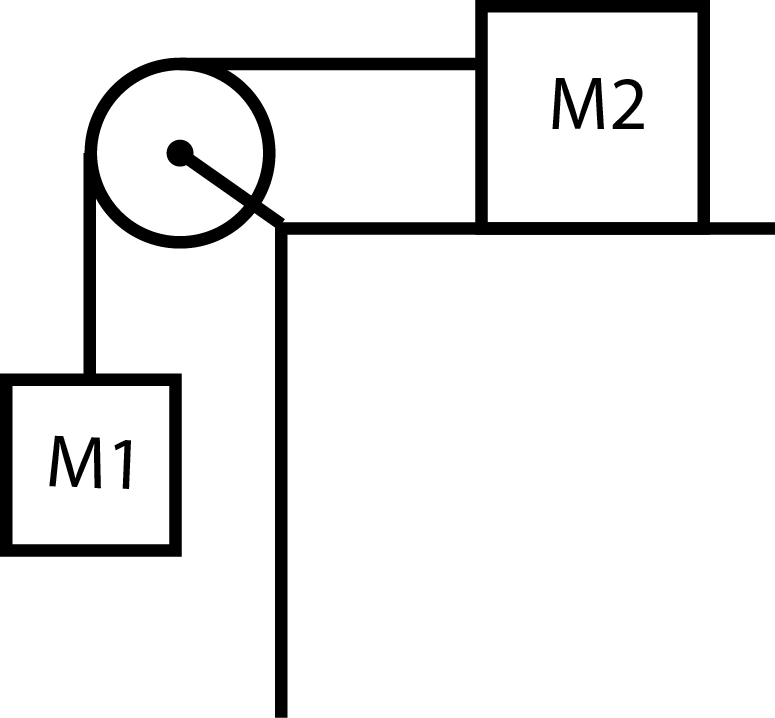

Problem 1 [Solution]
Consider the same problem as before, but now M2 rests on a table with a coefficient of static friction μs = 0.4. What is the minimum mass M2 could have in order to prevent M1, of mass 14 kg, from moving downwards?

Answer: 35 kg
In order for M1 to remain motionless, the force of tension must exactly cancel the force of gravity. Thus, we set Fg1 = M1g = T = 137.2 N. In order for M2 to remain motionless, the force of static friction must be sufficient to counteract the force of tension pulling M2 to the left. The minimum mass of M2 necessary to maintain equilibrium corresponds to the maximum static friction force for a given mass, as represented in the expression Fsf = μsFN = μsM2g. Setting this expression equal to the force of tension and solving for M2, we obtain a value equal to (137.2 N)/(0.4 x 9.8 m/s2) = 35 kg.